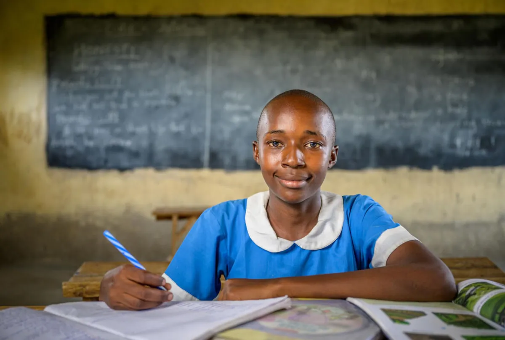
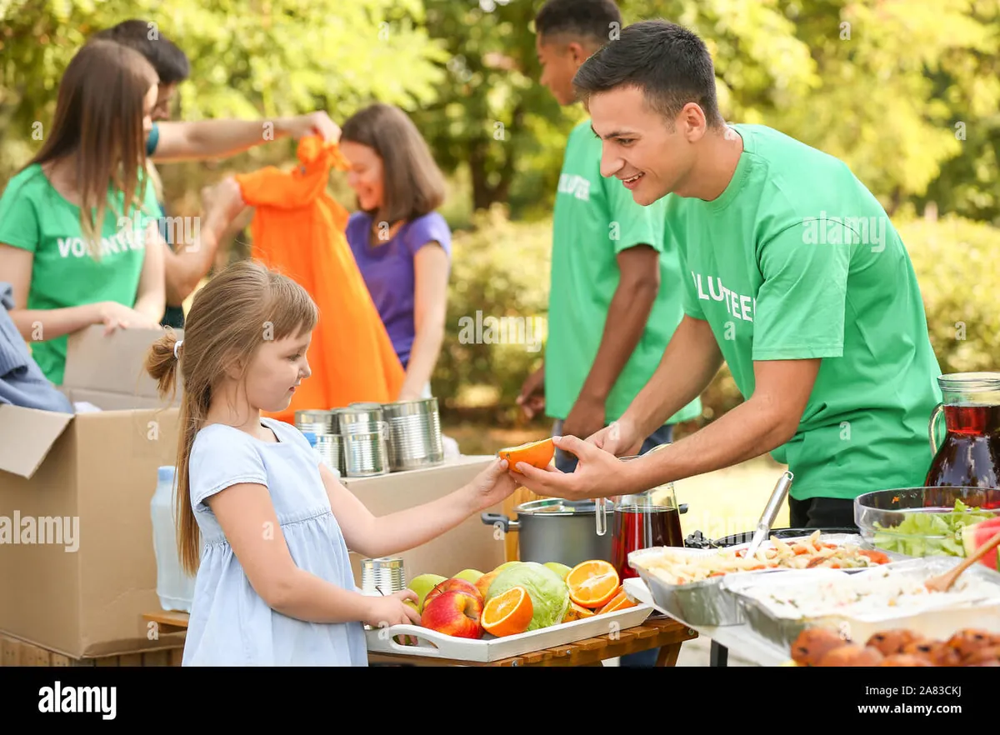

Education
Learning centers, digital classrooms, scholarships and school kits for children in underserved areas.
- 45 rural learning centers
- Girl-child scholarships

Eight programs, one goal — lasting change built on small acts of generosity.
Each program is designed with communities, measured with data, and sustained by local leadership.
Learning centers, digital classrooms, scholarships and school kits for children in underserved areas.

Mobile health camps, vaccinations, maternal care and telemedicine for remote communities.
Tree plantation, river clean-ups, waste recycling and community solar initiatives.

Community kitchens, ration kits and midday meals fighting hunger in urban and rural India.
Skill training, micro-loans, self-help groups and leadership programs for women.

Child sponsorship, nutrition programs, counseling and safe-spaces for at-risk children.

Water access, sanitation, livelihood support and infrastructure for self-reliant villages.

Rapid-response teams delivering food, shelter kits and medical aid within 48 hours.
Give to our General Fund and our field teams will direct it where the need is greatest this month.
Donate to General Fund